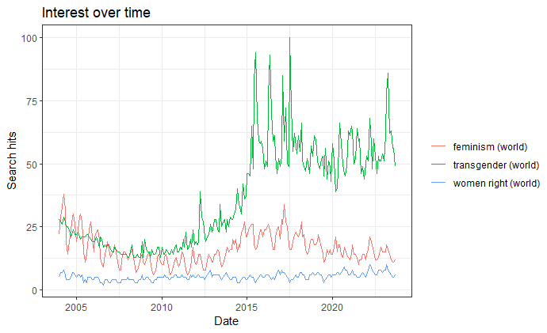

1+1[1] 2My name is Julian and I study at UTD and I will use this website to upload course content. I am studying in the double-degree program International Political Economy at the University of Texas at Dallas, and at the Philipps-University Marburg (Germany)
Here you can find a short CV of myself:
My Assignments:
Assignment 1: Qualtrics Introduction
2. How is the survey structured?
The survey starts with an introduction and appreciation of participation, which is probably part of the survey to incentivize the participants to complete the survey. After the introduction the survey continues with a question about the opinion on different topics related to movies and concerns like violence and sexual content in movies.
After that question the survey seems to be structured without a reasonable concept. The questions about demographics are placed at the end of the survey, which is not common in surveys. The other questions aim at the willingness to pay for software and hardware (DVDs) and several different topics and are distributed in a random way. For example, some questions about if the participants has a DVD recorder, come after the question if the participant would like to have software that can control content of violence etc..
2.1 What is the questionnaire composed of?
The first question asks about the opinion of the participant on a scale from strongly disagree to strongly agree, so that there is a scale of five options.
Other questions ask for a yes or no, which can also be interpreted as agreement or disagreement.
Some other questions show different ranges as answer. Those questions are used to find insights about the willingness to pay (e.g., Question 5).
Like already mentioned in the previous questions, there are a couple of demographic questions in the end of the survey.
Other questions just ask for nominal values, like what kind of DVD player the participant possesses.
More technically, there are Drop-down menus, tables, multiple choice questions and single choice questions.
2.2 How are the questions ordered?
The questions are ordered in a more or less random way, so what the survey is not doing is from going from the general topics to the specific topics.
7. What can be done to improve respondents’ experience?
First of all, the survey could be more mobile friendly, since many people use the phone for participating and there are technical possibilities to do so! Also, the structure of the survey could be improved by asking general questions first and then proceeding to the more complex questions, where the context of the other questions is available. Another topic that needs to be addressed is that some questions are formulated in a confusing way. For example, Question 3 and 11 have some kind of overlap and could be reformulated in a clearer and better way.
https://utdallas.qualtrics.com/jfe/form/SV_71lvbXqq7u9ccVo
Further Assignments:
4. What is the difference between this block and the previous instrument?
Adding a further block with questions about income and education implies that these questions were not designed for the specific survey of Diversity and Inclusiveness. For that reason, the questions should be adapted to the survey or our own questions should be formulated. Also, adding questions from other surveys can be formulated in another context, e.g., the income and education questions come from a survey for the US, but it could also be the case that it comes from a country in Africa, where the income scale should be adapted to the country where the actual survey will be conducted.
https://utdallas.qualtrics.com/jfe/form/SV_beZJSTLyv5xCxEi
Assignment 2: Google Trends
A: Panel
I created a contact list with some email adresses, that will recieve the survey at the 30th September at 12pm. Also I included a question at the end of the survey that asks for an email adress, so that I can collect other email adresses.

https://utdallas.qualtrics.com/jfe/form/SV_71lvbXqq7u9ccVo
1. Analyse the data
I searched google trends on the terms Trump, Biden and Election. In the first result one can see the interest over time of those search terms. A value of 100 means the highest popularity, which also implies that a value of 50 means that the term was half as popular compared to the value 100. Therefore, google trends compares the popularity of the search term, which is a relative measure, as it searches for the most popular term at a specific time and sets it as a benchmark. I looked into the interest over time for the last 30 days. One can see that the term Trump was most popular on the 25th of August. The other search terms were very unpopular compared to that value since the highest score for Biden is 10 on the 14th of September. The term election also was very unpopular compared to Trump, with a value of 3 on a couple of days.
After that I looked at the data for "Compared breakdown by subregion". In that category, you can see how big the shares of the terms were relative to all observations of those terms. I looked into those patterns on the state level and in every State, Trump was the most popular term out of the chosen.
2. What are the differences between the two methods?
If you download the data on google trends, you will get them in a csv format, which you can use in every processing software basically. Also, if you want to analyze all categories together, you need to download the data separately and then add them together manually. If you use R to analyze the data, you have the data all together and can use it more easily. Also, you have more possibilities to compare the data with different keywords and are able to perform sophisticated analysis.
In the plot we can see the hits of the keywords transgender, feminism and woman rights. With R it is more easy to organize the data, because R provides to opportunity to perform many analysis. For example you can also use GIS methods and connect that with google trends data or social media data.

1+1[1] 2